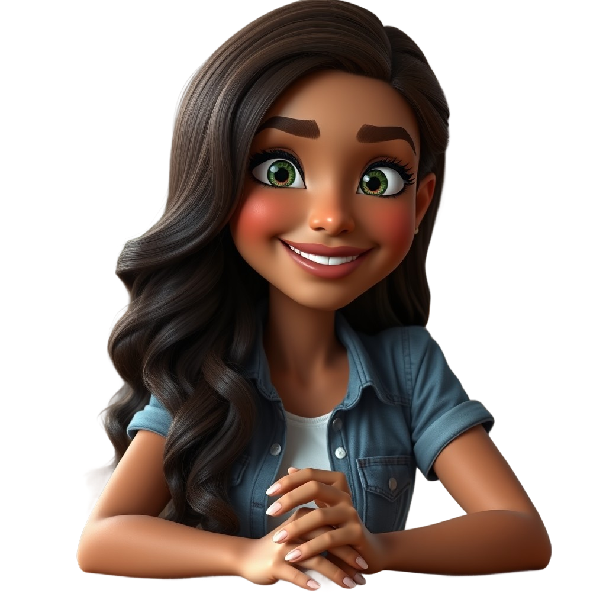
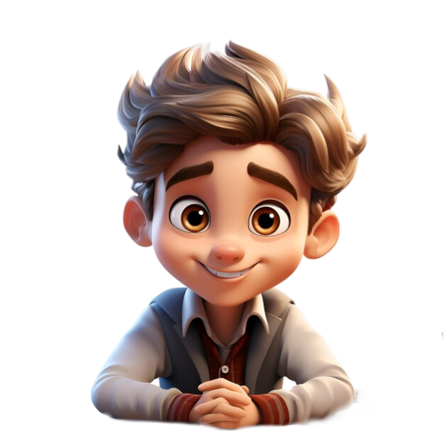
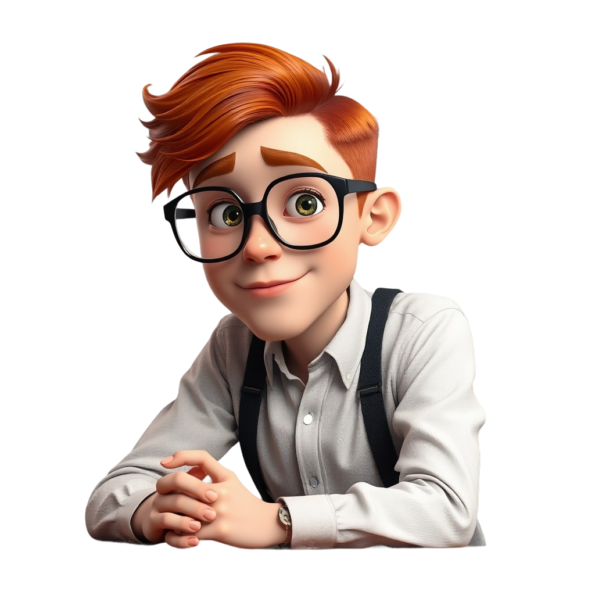

Esta app funciona como una aplicación instalada en tu teléfono.
Gratis, sin tienda de aplicaciones. Toma 10 segundos.
Toca el menú ⋮ de Chrome y luego "Instalar aplicación".
¡Listo! Abre Unscramble desde tu pantalla de inicio.


